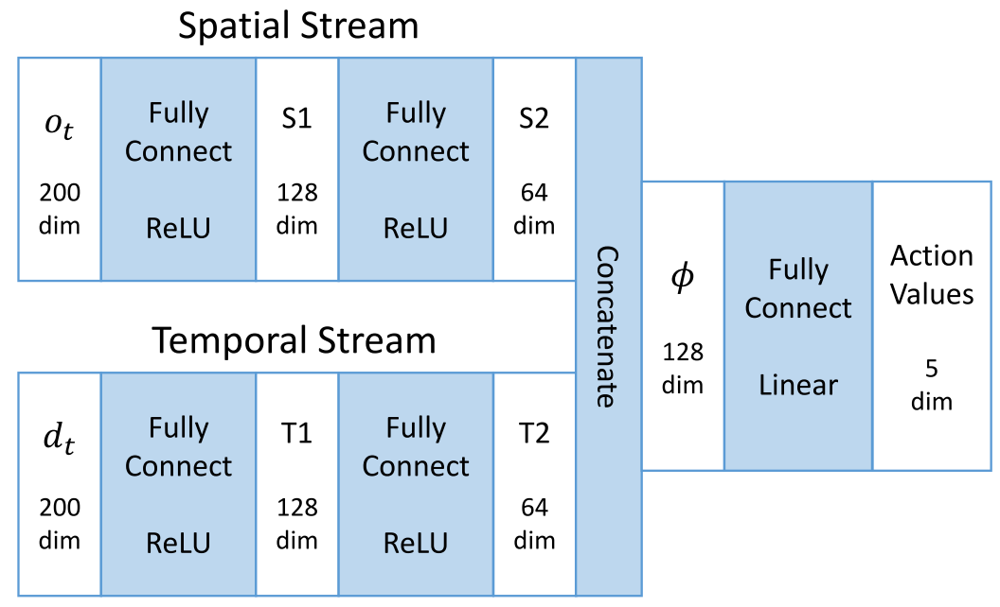
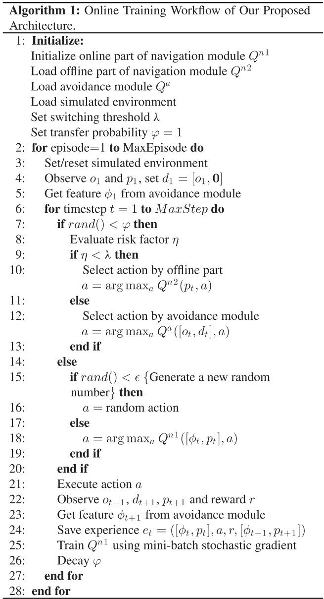

Learning to Navigate Through Complex Dynamic Environment With Modular Deep Reinforcement Learning
Main contributions:
- A modular architecture for navigation problems is proposed to separately resolve local obstacle avoidance and global navigation, which enables modularized training and promotes generalization ability.
- A novel two-stream Q-network is developed for obstacle avoidance. By separating spatial and temporal information from raw input and processing them individually, this new approach supplements temporal integration of agent observations and surpasses the conventional DQL approach in moving obstacle avoidance tasks.
- We proposed an action scheduling method, which combines and exploits the pretrained policies for efficient exploration and online learning in unknown environments.
RELATED WORK
Traditional Robotics
The Potential Field Method (PFM).
Vector field histogram (VFH), VFH+, VFH*.
Simultaneous localization and mapping (SLAM), vision-based SLAM.
Reinforcement Learning
Hierarchical reinforcement learning.
The option framework, concurrent option framework, HAM, MAXQ.
DRL: Double Qlearning, Dueling network architecture, deep deterministic policy gradient method, A3C, Hierarchical-DQN.
PROPOSED APPROACHES
Divide and conquer strategy, divide the main navigation task into two subtasks: local avoidance and global navigation.
Avoidance Module
The simulated environment is formalized as a Markov Decision Process (MDP) described by a 4-tuple \(S, A, P, R\).
Time step \(t\), state \(s_t \in S\), action \(a_t \in A \), policy \(\pi\), reward \(r_t \sim R(s_t, a_t)\), new state \(s_{t+1} = P(s_t, a_t)\), return \(R_t = \sum_{t'=t}^T \gamma^{t'-t} r_t', \gamma \in [0, 1]\).
Action-value function or Q-function: \(Q^\pi(s, a) = \mathbb{E}[R_t | s_t=s, a_t=a]\).
Optimal Action-value function or optimal Q-function: \(Q^*(s, a) = \max_\pi \mathbb{E}[R_t | s_t=s, a_t=a]\).
This optimal action-value function verifies the Bellman optimality equation: \(Q^(s, a) = \mathbb{E}[r + \gamma \max_{a'} Q^(s', a') | s, a]\).
Then, the Q-function can be estimated by utilizing this equation as an iterative update, which is given by
$$ Q(s, a) \leftarrow Q(s, a) + \alpha [r + \gamma \max_{a'} Q(s', a') - Q(s, a)]. $$
For this avoidance task with LRF observations in a dynamic environment, we proposed a two-stream Q-network to approximate the action-value function.

The spatial part is the raw laser scan \(o_t\); the temporal part is the difference between the present and the previous laser scans, namely, \(d_t = o_t - o_{t-1}\).
The two-stream Q-network is present as \(Q^\theta (s_t, a_t), s_t = (o_t, d_t)\).
Two main techniques are employed:
- experience replay
- The agent’s transition experience \(e = (s_t, a_t, r_t, s_{t+1})\) of each step is stored in a replay buffer \(D = (e_1, \dots, e_N)\).
- double Q-learning
- A separated network termed target network is introduced to estimate the target for gradient descent update of the main network.
The weights of the main network at training iteration i are updated by minimizing the loss function:
$$ L_i(\theta_i) = \mathbb{E}_{e \sim D} [(y_i - Q^{\theta_i}(s_t, a_t))^2] $$
$$ y_i = r + \gamma \hat{Q}^{\theta^-}(s_{t+1}, \argmax_{a'} Q^{\theta_i}(s_{t+1}, a')) $$
\(y_i\) is the updating target from the separated target network \(\hat{Q}\) with parameters\(\theta^-\).
The update is performed by gradient descent:
$$ \nabla_{\theta_i}L_i(\theta_i) = \mathbb{E}{e \sim D} [(y_i - Q^{\theta_i}(s_t, a_t)) \nabla{\theta_i} Q^{\theta_i}(s_t, a_t)] $$
$$ \theta_{i+1} \leftarrow \theta_i - \alpha \nabla_{\theta_i}L_i(\theta_i) $$
The learned avoidance control policy: \(\pi^\theta(s) = \argmax_a Q^\theta(s, a)\).
To ensure continual exploration, the action is selected by an \(\epsilon\)-greedy strategy.
Navigation Module
Two parts:
- the offline part
- solve the simple navigation subtask: seeking the fastest policy to drive the agent directly to the destination only based on the relative coordinates in a blank environment without any moving obstacles.
- standard Q-learning algorithm: input is the 2-D vector \(p_t\), a large positive reward for reaching the destination and a small negative reward for every time step to urge the agent to get the destination in the fastest way.
- the online part
- two inputs: 1) a 2-D relative coordinates vector of the destination \(p_t\); 2) a 128-D feature \(\phi\) from the avoidance module, which conveys both spatial and temporal information of the surrounding situation.
- a positive reward for reaching the destination and a negative reward for collision and also a small time punishment in each step.
- the training procedure follows the DQL algorithm, experience replay and double Q-learning.
- an action scheduler to pick up the actions from three action alternatives.
Action Scheduler
The real-time risk factor \(\eta\) is defined as
$$ \eta = \frac{1}{\min(o_t - \kappa d_t)}, \kappa \in [0, 1] $$
switching threshold \(\lambda\), the switching strategy:
$$ a = \begin{cases} action_{n2} \ \ \eta < \lambda \ action_a \ \ \eta \geq \lambda \ \end{cases} $$
where action_a and action_n2 are the action alternatives offered by the avoidance module and the offline part of the navigation module, respectively.
To guarantee a smooth transfer, we introduce a self-decaying transfer probability \(\varphi\). In each step, the agent follows the heuristic policy with the probability \(\varphi\) for heuristic exploration, with probability \((1-\varphi)(1-\epsilon)\) to exploit its online learning policy.
Besides, we still keep a small probability \(\epsilon\) for random exploration to further promote the performance. The (\varphi\) starts from 1 and decays in each step utill 0.
